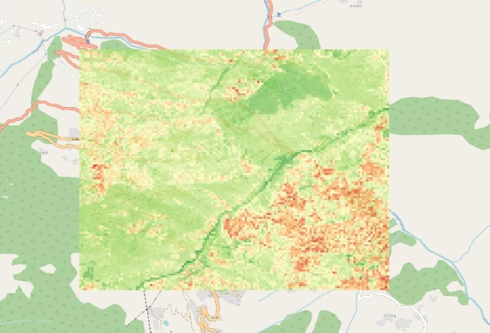

Geospatial Vulnerability Map
Data sourced from geological & construction surveys
Low Vulnerability
Moderate Vulnerability
High Vulnerability

Low
Moderate
High
Infrastructure at Risk
by typeHigh-Priority Intervention
| Location | Risk | Urgency |
|---|
Regional Vulnerability Score
High Risk0.0 / 10
Mitigation Readiness
--%
Selected region: --
Population in High-Risk Zones
--
Human-centric metric — updated on load
Risk Factor Distribution
Live
Seismic
Slopes
Poor Construction